Lab 7：Kalman Filter
Part 1 Estimate Drag and Momentum
To build the state space model for the car, I need to estimate the drag and momentum terms in my matrices.
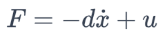
Replacing F by Newton's second law of motion, I got two states for this model:

Using two states, I can estimate drag d and mass m from measuremnt of steady input. The following is to solve this state space model.

When calculating the speed using the position differences within small dt , it occured that list of calculated speed stayed zero. To debug, I added Serial Print .
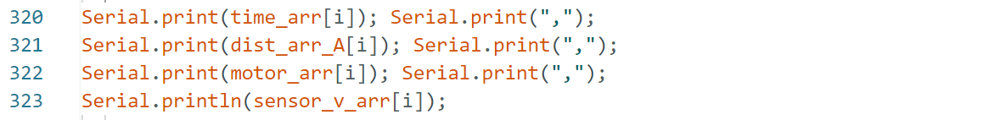
It turned out that I got NaN for the initial data value as dt is zero. Invalid data may collapse the appending process. Therefore, I editted my code inside estimate_dis to ensure a zero input for the first calculated speed value.
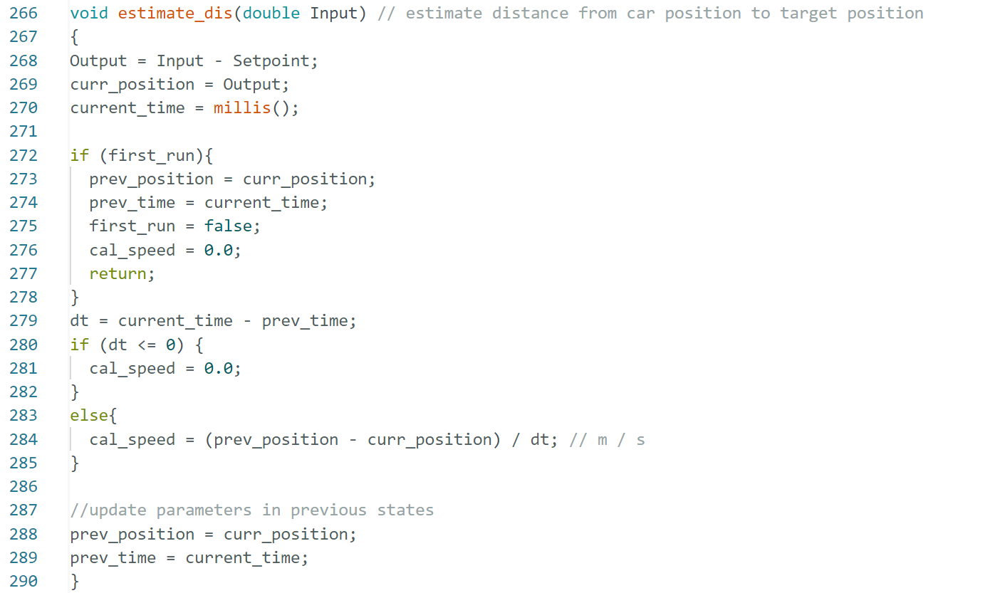
To avoid car crashing to the wall, I set the Setpoint to be at 400mm from the wall, and command robot to go to the opposite direction when it approaches to 250mm from set point, creating buffer to decrease speed in time before crashing to the wall. The following graphs showed TOF measured distance (mm), motor input PWM speed, and calculated speed VS time (s) in the order.
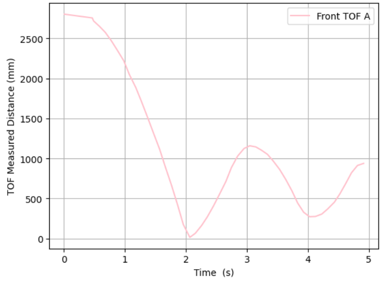
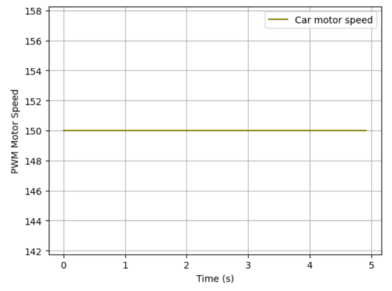
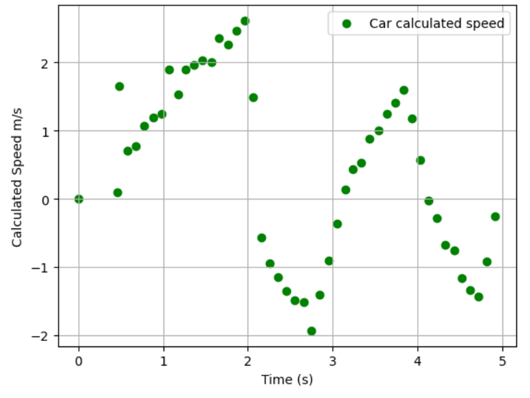
To get the steady state speed, I took data points from scatter version of plot. By intuition, I would get the linear segment of data right before the change of car direction due to avoid-crashing system. However, the speed after car started reacting to measured distance would not be steady state anymore. Therefore, I took data points before 650 mm (Setpoint 400mm + Interference Distance 250mm) and get a steady state speed of 2425.6 mm/s. The 90% rise time is roughly 1.335s and the speed at that time is 2182.5 mm/s. Therefore, the drag is 0.412 kg/s, and the mass of car system is 0.239 kg.

Part 2 Initialize KF
From lecture 14, I wrote A, B, C matrices using dynamic parameters as shown below. Because the measurement is distance in positive values, so position should be positive (1) instead of negative (-1) in the matrice.
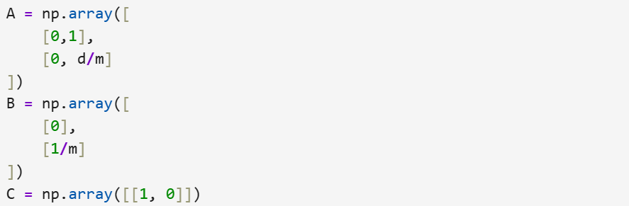
For the sampling time, I used 0.1 s as this is very consistent from my measuring speed. In the process of quantifying uncertainity, I can use Kalman filter to balance the trust between model and sensor. For process noise (sigma_u) and measurement noise (sigma_z), I have model errors in position updates and velocity updates as well as distance measurement noises.
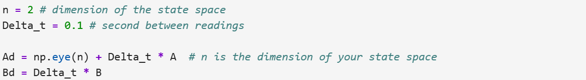
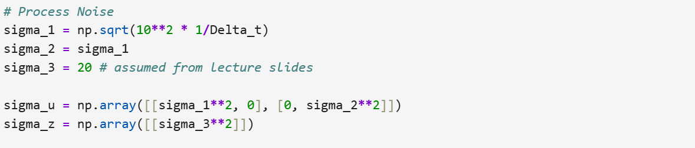
Part 3 Implement & Test KF in Jupyter
I implemented Kalman function based on code provided in the lecture slides. The shown code snippet combines measurement updates with model.
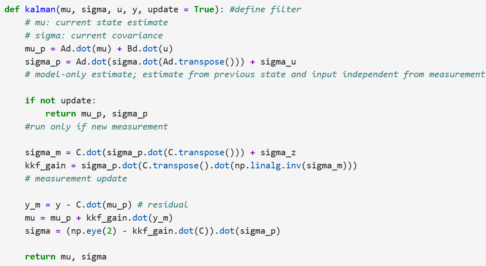
The result of Kalman filter is shown below in the plot. Model fits pretty good with measurement results.
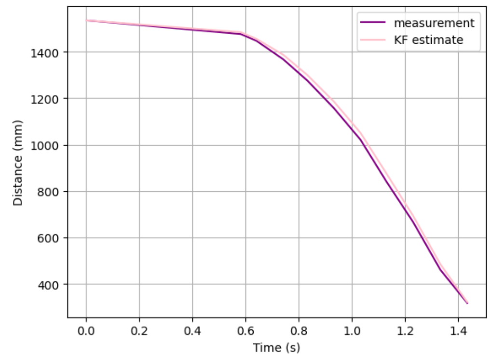
However, trusting filter more will lead to big deviation from data. In terms of parameters, smaller sigma 1 & 2 and larger sigma 3 would be more trust of model Specifically, process noise (sigma 1 & 2) controls trust in the model with its larger value leaning to trust measurement more. Meausrement noise (sigma 3) with larger value makes data trend smoother but not responsive to changes in measurement. Model parameter d and m need to match with the system or the model will show biased prediction.
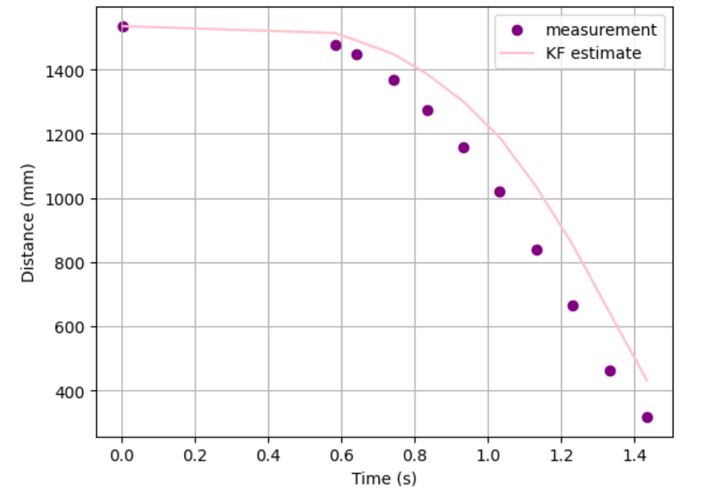
Part 4 Implement the Kalman Filter on the Robot
I translated Kalman Filter code from python to C++ for arduino and remove code snippet for interpolation. Here are functions specifically for Kalman filter.
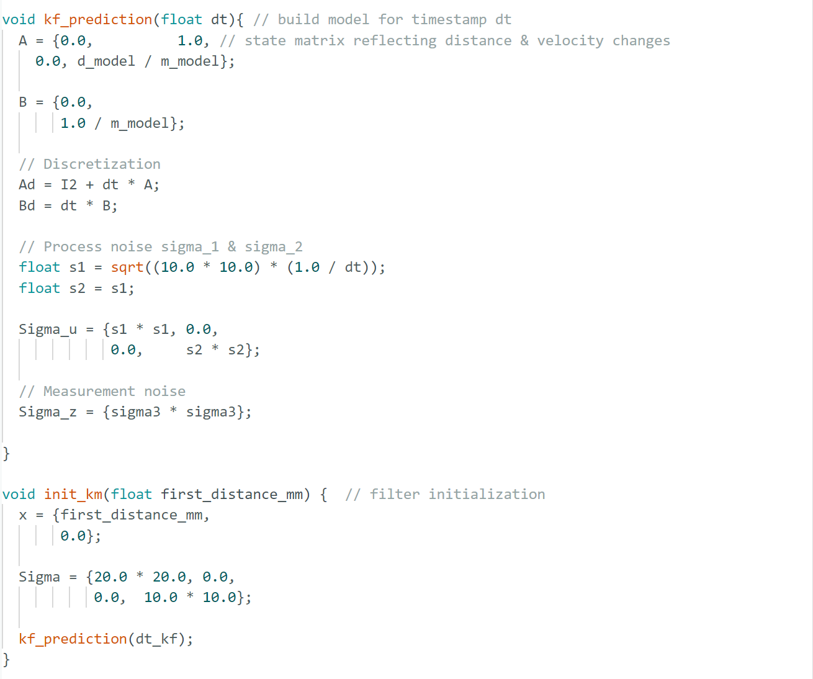
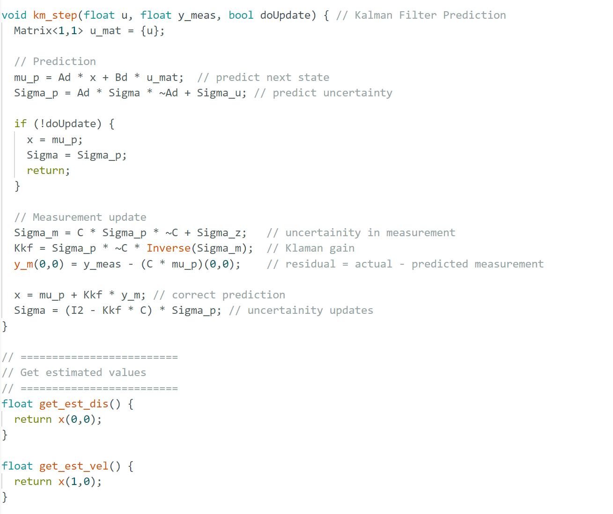
My observation for Kalman filter prediction: Distance got from Kalman filter is matching with actual measurement pretty well with small overshoot. Because I am only using a P control, it is reasonable that i cannot full remove overshot like a PD control.Compared with large spike in raw data, Klaman filter produces did work to smooth the distance slightly, which can be improved by an increased sigma_3. Near steady state, Klaman filter converges to a stable value with little fluctuation, which showed good control stability.
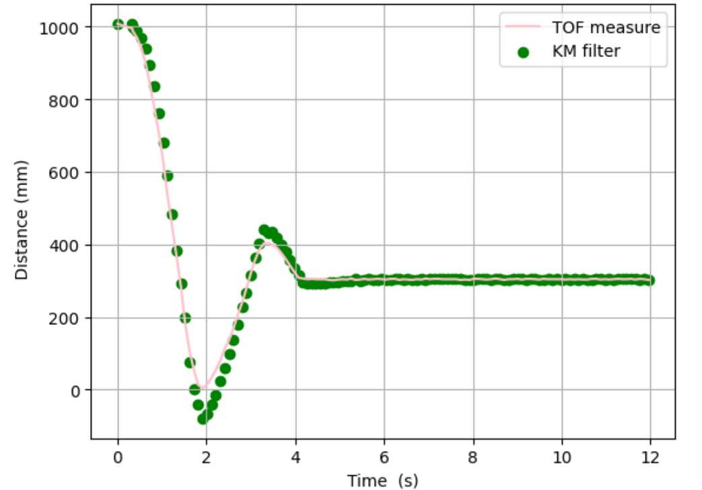
Watch the video of car with Kalman Filter predicting based on real-time TOF measurement.Reference
I referred to Trevor Dales and Jeffery Cai lab report for checking the Kalman Filter performance.
I referred to Lecture 13 - Observability and Kalman Filters for related equations and codes.
I used chatGpt for clarifying questions, debugging for python-C++ conversion.